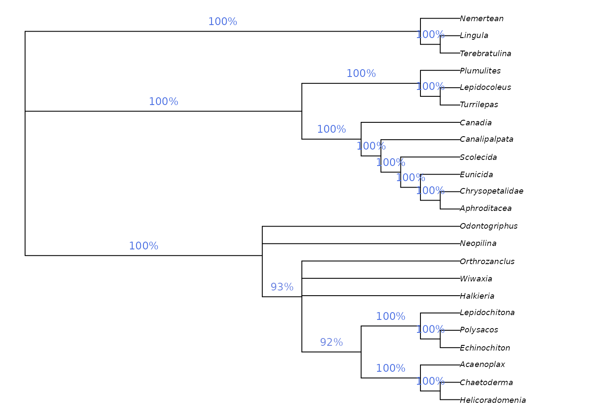

Getting started: Simple tree searches
Martin R. Smith
2021-09-21
Source:vignettes/tree-search.Rmd
tree-search.Rmd“TreeSearch” is an R package that allows, among other things, parsimony search on morphological datasets that contain inapplicable data, using the algorithm proposed by Brazeau, Guillerme and Smith (2019) and implemented in the ‘MorphyLib’ C library (Brazeau, Smith, & Guillerme, 2017) (details).
Getting started
A companion vignette gives details on installing the package and getting up and running.
Launch an interactive ‘app’ in your browser by typing TreeSearch::EasyTrees() at the R / RStudio command line.
This will allow you to load data from a file, modify search settings, and explore the distribution of most parsimonious trees in tree space.

Starting parsimony search
View a consensus tree and explore the position of rogue taxa:

Visualizing position of rogue taxon on search result consensus tree
Explore the distribution of trees (whether found by search or loaded from file) in tree space:

Evaluating search progress using tree space
Map characters on a chosen tree, using character and taxon notes imported from a Nexus file, if present. (This is designed to be interoperable with MorphoBank matrices.)

Mapping character reconstructions
Trees can be saved as images, or in Nexus/Newick for further analysis.
Command line tree search
You can also run tree searches using the R command line. Once installed, load the “TreeSearch” package into R using
You can load your own dataset, but for now, we’ll use the Vinther et al. (2008) dataset that comes bundled with the “TreeSearch”.
This dataset is small enough that it runs reasonably quickly, but its phylogenetic signal is obscure enough that it can require Ratchet searches to escape from local optima.
rawData <- TreeSearch::inapplicable.datasets[['Vinther2008']]
vinther <- phangorn::phyDat(rawData, type = 'USER', levels = c(0:9, '-'))
# Set a random seed so that random functions in this document are reproducible
suppressWarnings(RNGversion("3.5.0")) # Until we can require R3.6.0
set.seed(0)We can conduct a basic parsimony search with:
bestTrees <- MaximizeParsimony(vinther)It can be instructive to inspect the progress of tree search.
firstHit <- attr(bestTrees, 'firstHit')
firstHit## seed start ratch1 ratch2 ratch3 ratch4 ratch5 ratch6 final
## 0 27 0 0 15 2 6 0 2Here, we can see that many of the earliest ratchet iterations were finding optimal trees that had not previously been visited. Later iterations found progressively fewer new trees, suggesting that the search is likely to have been effective.
Advanced users might wish to visualize the progress of tree search by mapping tree space:
distances <- TreeDist::ClusteringInfoDistance(bestTrees)
searchStages <- length(firstHit)
map <- cmdscale(distances, k = 3)
cols <- hcl.colors(searchStages, alpha = 0.8)
par(mar = rep(0, 4))
TreeDist::Plot3(map,
col = cols[rep(seq_along(firstHit), firstHit)],
pch = 16, cex = 2,
axes = FALSE, xlab = '', ylab = '', asp = 1)
TreeTools::MSTEdges(distances, plot = TRUE, map[, 1], map[, 2],
col = '#00000030', lty = 2)
legend('topright', names(firstHit), col = cols, pch = 16, bty = 'n')
A quick glance suggests that early ratchet iterations captured a large part of the diversity of optimal trees, and that iterations aren’t getting stuck in local optima – though conscientious users will ensure that the mapping of tree space is meaningful and adequate to detect structure before making any firm conclusions (Smith, 2022).
To be thorough, we might consider continuing the search for a little longer, fine-tuning the search parameters:
bestTrees <- MaximizeParsimony(vinther, tree = bestTrees,
ratchIter = 6L,
tbrIter = 4L,
finalIter = 3L,
maxHits = 80L)As it happens, the best tree for this dataset has a score of 79 under equal weights parsimony.
We can plot the best tree(s) that we’ve found, and check its parsimony score (length):

TreeLength(bestTrees[[1]], vinther)## [1] 79Evaluating clade support
We might be interested in labelling clades with their frequency among the sampled most-parsimonious trees:
par(mar = rep(0.25, 4), cex = 0.75) # make plot easier to read
cons <- ape::consensus(bestTrees, p = 0.5)
splitFreqs <- TreeTools::SplitFrequency(cons, bestTrees) / length(bestTrees)
plot(cons)
TreeTools::LabelSplits(cons, round(splitFreqs * 100), unit = '%',
col = TreeTools::SupportColor(splitFreqs),
frame = 'none', pos = 3L)
A more instructive measure of clade support can be generated using Jackknife resampling. The Resample() manual page has suggestions for appropriate numbers of replicates and search intensity, and instructions for calculating bootstrap support; the code here gives a quick-to-run jackknife framework that can be adapted to the requirements of a particular dataset.
nReplicates <- 10
jackTrees <- lapply(logical(nReplicates), function (x)
Resample(vinther, bestTrees, ratchIter = 0, tbrIter = 1, maxHits = 4,
verbosity = 0)
)
par(mar = rep(0, 4), cex = 0.8)
# Take the strict consensus of all trees for each replicate
JackLabels(cons, lapply(jackTrees, ape::consensus)) -> XX
Jackknife and bootstrap support values give an indication of the volume of data that supports each node, but don’t necessarily indicate whether the data are unanimous on the existence of a clade: a high bootstrap support value could indicate a large number of characters supporting a clade, and an only slightly smaller number of characters contradicting it.
“TreeSearch” implements a number of concordance measures that aim to indicate whether a dataset is unanimous or divided in support of a grouping, independently of the method of tree reconstruction.
concordance <- QuartetConcordance(cons, vinther)
# Alternative measures:
# concordance <- ClusteringConcordance(cons, vinther)
# concordance <- PhylogeneticConcordance(cons, vinther)
par(mar = rep(0, 4), cex = 0.8)
plot(cons)
TreeTools::LabelSplits(cons, signif(concordance, 3),
col = TreeTools::SupportColor(concordance / max(concordance)),
frame = 'none', pos = 3L)
Implied weighting
Equal weights produces trees that are less accurate and less precise than implied weights (Smith, 2019); equally weighted analysis should never be conducted without also considering the results of implied weights (Goloboff, 1993, 1997), ideally under a range of concavity constants (cf. Smith & Ortega-Hernández, 2014).
Implied weights can be activated by simply specifying a value of the concavity constant, k:
iwTrees <- MaximizeParsimony(vinther, concavity = 10)
par(mar = rep(0.25, 4), cex = 0.75) # make plot easier to read
plot(ape::consensus(iwTrees))Note that we recommend a default value of 10, somewhat higher than the default of 3 in TNT; this low default gives poorer results in many settings (Goloboff, Torres, & Arias, 2018; Smith, 2019). Better still is to use multiple values and compare the results, perhaps in Tree space. Even better (?) is to use profile parsimony.
Constraining a search
It is sometimes legitimate to insist that trees must contain a certain clade. Doing so reduces the number of tree rearrangements that are considered, and can this speed up tree search.
“TreeSearch” supports soft constraints, which can be specified using a separate Nexus file, or by creating a phyDat object in R. Constraints are effectively phylogenetic characters; only trees on which each such character fits perfectly will be considered. The position of taxa not listed in a constraint will not be constrained.
MaximizeParsimony() will attempt to find a starting tree that satisfies the constraints, but if it cannot, it may be necessary to specify one manually – perhaps after checking that no constraints are contradictory.
Here’s a simple example on six taxa that enforces the bipartition ab | cdef:
library("TreeTools", quietly = TRUE, warn.conflicts = FALSE)
constraint <- MatrixToPhyDat(c(a = 1, b = 1, c = 0, d = 0, e = 0, f = 0))
characters <- MatrixToPhyDat(matrix(
c(0, 1, 1, 1, 0, 0,
1, 1, 1, 0, 0, 0), ncol = 2,
dimnames = list(letters[1:6], NULL)))
plot(MaximizeParsimony(characters, constraint = constraint,
verbosity = -1)[[1]])
Here’s a more complex example that imposes the splits ab | cef and abcd | ef, whilst allowing g to plot anywhere on the tree:
characters <- MatrixToPhyDat(matrix(
c(0, 0, 1, 1, 1, 1, 1,
1, 1, 1, 1, 0, 0, 0), ncol = 2,
dimnames = list(letters[1:7], NULL)))
constraint <- MatrixToPhyDat(matrix(
c(0, 0, 1, '?', 1, 1,
1, 1, 1, 1, 0, 0), ncol = 2,
dimnames = list(letters[1:6], NULL)))
plot(MaximizeParsimony(characters, constraint = constraint,
verbosity = -1)[[1]])
Constraints can also be loaded from a Nexus file with constraint <- TreeTools::ReadAsPhyDat('constraint_file.nex').
References
Brazeau, M. D., Guillerme, T., & Smith, M. R. (2019). An algorithm for morphological phylogenetic analysis with inapplicable data. Systematic Biology, 68(4), 619–631. doi:10.1093/sysbio/syy083
Brazeau, M. D., Smith, M. R., & Guillerme, T. (2017). MorphyLib: A library for phylogenetic analysis of categorical trait data with inapplicability. doi:10.5281/zenodo.815372
Goloboff, P. A. (1993). Estimating character weights during tree search. Cladistics, 9(1), 83–91. doi:10.1111/j.1096-0031.1993.tb00209.x
Goloboff, P. A. (1997). Self-weighted optimization: tree searches and character state reconstructions under implied transformation costs. Cladistics, 13(3), 225–245. doi:10.1111/j.1096-0031.1997.tb00317.x
Goloboff, P. A., Torres, A., & Arias, J. S. (2018). Weighted parsimony outperforms other methods of phylogenetic inference under models appropriate for morphology. Cladistics, 34(4), 407–437. doi:10.1111/cla.12205
Smith, M. R. (2019). Bayesian and parsimony approaches reconstruct informative trees from simulated morphological datasets. Biology Letters, 15(2), 20180632. doi:10.1098/rsbl.2018.0632
Smith, M. R. (2022). The importance of methodology when analysing landscapes of phylogenetic trees. Forthcoming.
Smith, M. R., & Ortega-Hernández, J. (2014). Hallucigenia’s onychophoran-like claws and the case for Tactopoda. Nature, 514(7522), 363–366. doi:10.1038/nature13576
Vinther, J., Van Roy, P., & Briggs, D. E. G. (2008). Machaeridians are Palaeozoic armoured annelids. Nature, 451(7175), 185–188. doi:10.1038/nature06474